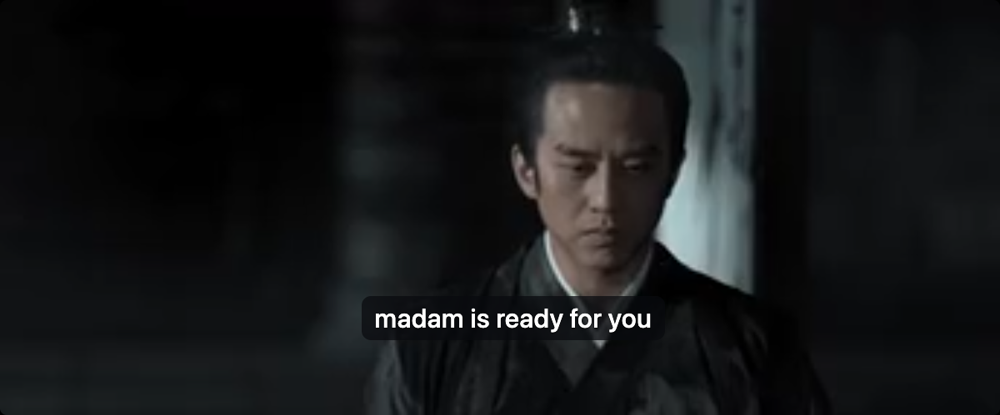

All Subs checks existing subtitles first — YouTube tracks, site-native tracks, or public subtitle libraries gated on runtime coverage — and only falls back to AI transcription and translation when nothing usable exists.
git clone https://github.com/mattdani21/all-subs
cd all-subs && ./allsubs setup
./allsubs start
Want retrieval or cloud mode without the 1.5 GB speech model? Run ./allsubs setup --lite
and pull the model later with ./allsubs model.

The browser stays idle until you caption a video. The extension sends the page URL and stream
source to 127.0.0.1:8765; the local engine recovers or generates cues and the
shadow-DOM overlay syncs them to video.currentTime with zero background polling.
| Route | When it runs | Measured |
|---|---|---|
| 1 · retrieve | Always tried first (unless you click Use AI instead): YouTube captions, site tracks, or Wikidata → IMDb → Wyzie library gated on runtime coverage. | 2–8 s · free |
| 2 · This Mac | Default AI mode: whisper.cpp on Apple Silicon; compact prefix-cached cue text goes to DeepSeek. Silent chunks skip Whisper automatically. |
11–17 min · ~$0.02–0.04 |
| 3 · Cloud | Opt-in mode: 32 kbps mono MP3 chunks sent to a multimodal model (OpenRouter/Gemini Flash). Fails over to local Whisper on error. | 4.9 s / 60 s · ~$0.30/film |
| 4 · Offline | Experimental opt-in (16 GB+ RAM): whisper.cpp plus local Qwen3-4B via llama.cpp. Nothing leaves the machine. |
100% local · 16 GB+ |
| Route | Sent off-device | Stays on your Mac |
|---|---|---|
| YouTube / native | Nothing (cue text to DeepSeek only if translating languages) | Audio & video |
| Library (Wyzie) | Cleaned title + year to Wikidata; IMDb ID to Wyzie | Audio & video |
| This Mac (AI) | Cue text only to DeepSeek (api.deepseek.com) |
Audio, video & Whisper model |
| Cloud (opt-in) | 32 kbps mono audio chunks to OpenRouter (openrouter.ai) |
Video |
| Offline (exp.) | Nothing | Everything |
127.0.0.1:8765.whisper.cpp; Linux should work, Windows untested.